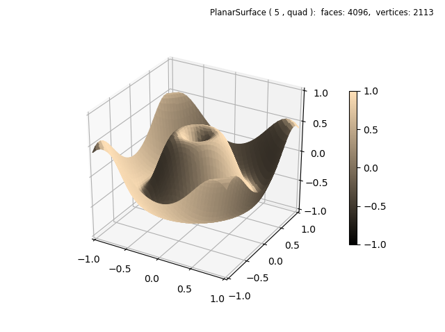
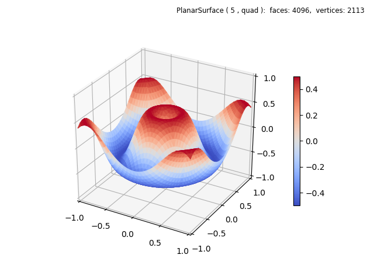
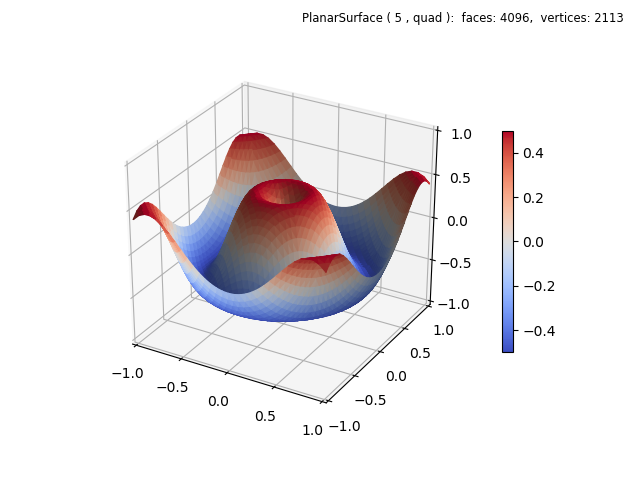

Shading¶
In this example, the initial plot only emphasizes the surface geometry. The surface geometry function is defined to produce a geometry similarly to the Matplotlib 3D surface example. Note that the coordinates are normalized, requiring scaling in the function definition.
import numpy as np
from matplotlib import pyplot as plt
from matplotlib.ticker import LinearLocator, FormatStrFormatter
import s3dlib.surface as s3d
import s3dlib.cmap_utilities as cmu
#.. Matplotlib Examples: Shading
# 1. Define function to examine .....................................
def wavefunc(xyz) :
x,y,z = xyz
r = np.sqrt( x**2 + y**2)
Z = np.sin( 6.0*r )/2
return x,y,Z
# 2. Setup and map surfaces .........................................
rez = 5
fc = [1,.88,.72]
cmap = cmu.rgb_cmap_gradient( 'black', fc )
wave = s3d.PlanarSurface(rez, facecolor=fc , cmap=cmap )
wave.map_geom_from_op( wavefunc ).shade(direction=[1,1,1])
#wave.map_cmap_from_op( lambda xyz : xyz[2] , 'coolwarm')
# 3. Construct figure, add surface, plot ............................
fig = plt.figure(figsize=plt.figaspect(0.75))
fig.text(0.975,0.975,str(wave), ha='right', va='top', fontsize='smaller', multialignment='right')
ax = plt.axes(projection='3d')
ax.set(xlim=(-1,1), ylim=(-1,1), zlim=(-1,1) )
ax.xaxis.set_major_locator(LinearLocator(5))
ax.yaxis.set_major_locator(LinearLocator(5))
ax.zaxis.set_major_locator(LinearLocator(5))
plt.colorbar(wave.cBar_ScalarMappable, ax=ax, shrink=0.6 )
ax.add_collection3d(wave)
plt.show()
The facecolor is assigned in the surface constructor and then shading is applied having a default depth of zero. However, the cmap argument is also assigned a custom value in the constructor so that the colorbar displays an appropriate color map. Otherwise a default colormap would be shown in the colorbar.
The referenced Matplotlib example uses a cmap applied to the vertical location of the surface. This can also be easily applied by uncommenting the highlighted line, which applies a surface cmap. A simple lambda function was used instead of defining a separate functional operation since the surface geometry is already applied. The resulting plot is shown below.
Comparing the resolutions, the Matplotlib example uses a square grid of 1600 rectangles whereas the current example uses 2048 rectangles divided into two triangles each for a total of 4096 faces.
Shading may be further applied to any surface, either a solid color or one with a color map. By simply chaining the shade method as:
wave.map_cmap_from_op( lambda xyz : xyz[2] , 'coolwarm').shade(0.25)
the above z-mapped surface was shaded as follows
